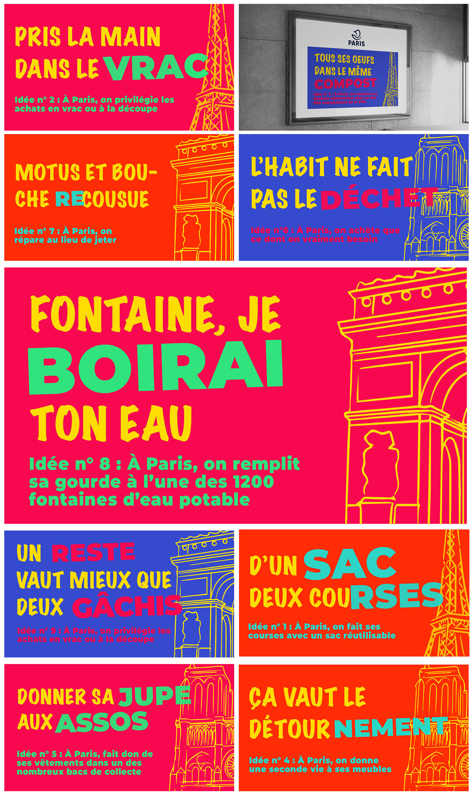

Garance Anglio
Progetti
About
Contatti
Parigi Rifiuti
Concezione di una campagna di sensibilizzazione fittizia alla riduzione dei rifiuti per la città di Parigi.
→ Il mio concetto era di usare espressioni tipiche francesi per incoraggiare con leggerezza abitudini eco-responsabili.
